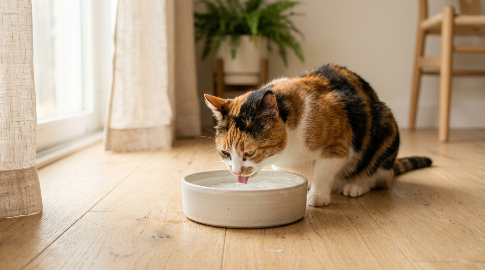
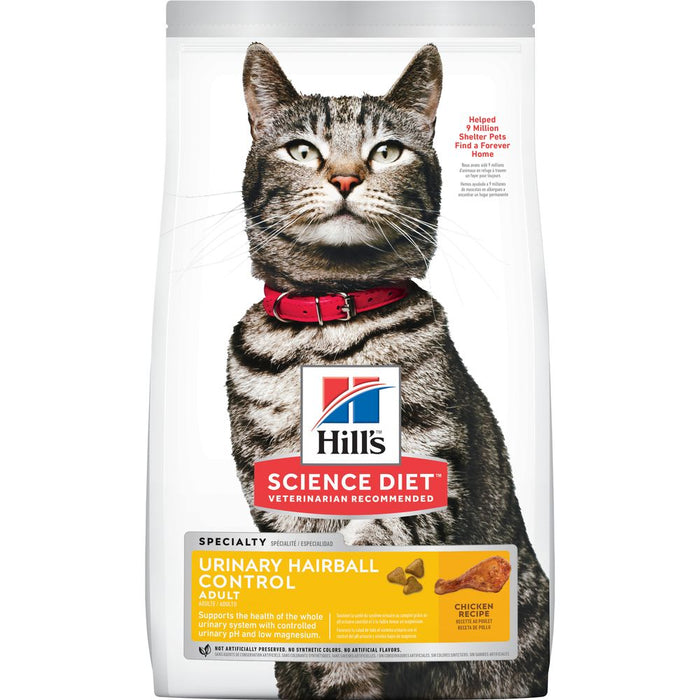
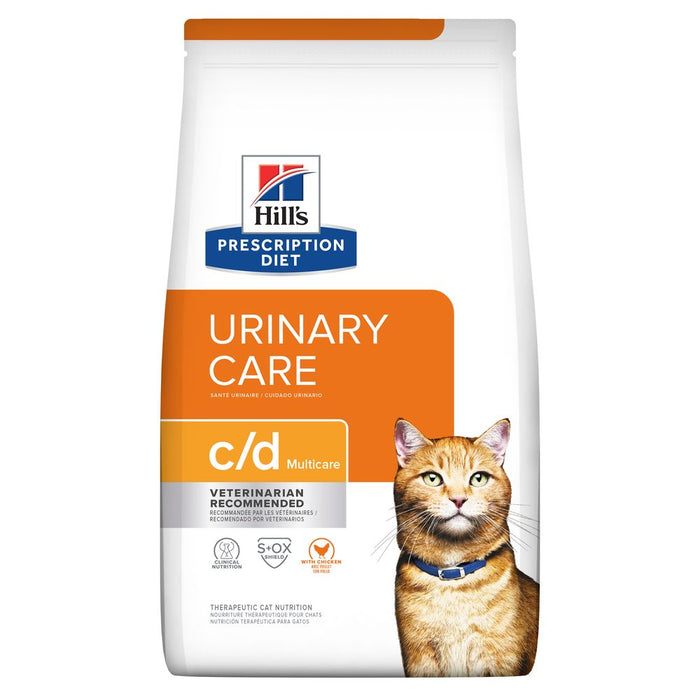
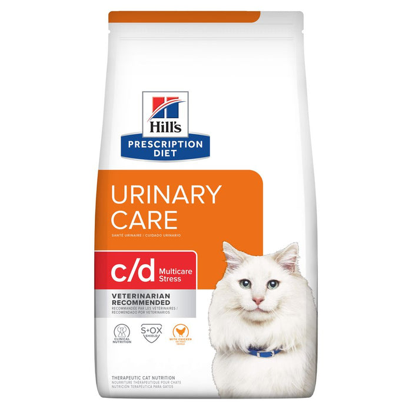

최종 의학 감수 2026년 8월 20일 · 임꺽정 수의사 | 최종 수정 2026년 10월 20일 | 이 글은 편집 방침에 따라 작성되고 수의사 감수를 거칩니다. 진료를 대신하지 않습니다.
화장실 밖에서 소변을 보거나, 화장실을 자주 들락거리는데 나오는 양이 적다면 단순한 행동 문제가 아니라 하부 요로 질환의 신호일 수 있습니다. 특히 수컷 고양이는 요도가 막히면 하루 안에 생명이 위험해집니다.
[ 증상 핵심 요약 ]
핵심 요약
- FLUTD는 하나의 병이 아닙니다. 방광과 요도에 생기는 여러 질환을 묶어 부르는 이름입니다.
- 가장 흔한 원인은 특발성 방광염이며, 세균 감염은 생각보다 드뭅니다.
- 소변을 전혀 못 보는 상태는 응급입니다. 수컷에서 특히 위험합니다.
FLUTD란 무엇인가
FLUTD(Feline Lower Urinary Tract Disease, 고양이 하부 요로 질환)는 방광과 요도에 영향을 주는 여러 질환을 한데 묶어 부르는 용어입니다. 겉으로 보이는 모습은 거의 같지만 원인에 따라 치료가 완전히 달라집니다.
- 고양이 특발성 방광염(FIC) — 뚜렷한 원인이 발견되지 않는 방광 염증으로, 하부 요로 증상을 보이는 고양이에게 가장 흔하게 내려지는 진단입니다.1
- 요결석 — 스트루바이트와 칼슘옥살레이트가 대표적이며, 종류에 따라 식이로 녹일 수 있는 것과 그렇지 않은 것이 나뉩니다.1
- 요도 마개 — 결정·점액·세포가 뭉쳐 요도를 막는 것으로, 수컷에서 문제가 됩니다.
- 세균성 요로 감염 — 사람이나 개와 달리 고양이에게는 상대적으로 드뭅니다. 다만 노령묘, 만성 신장질환·당뇨가 있는 고양이에서는 가능성이 올라갑니다.
“요로 감염”이라는 말이 널리 쓰이다 보니 항생제부터 떠올리기 쉽지만, 어린 고양이의 하부 요로 증상 상당수는 세균 감염이 아닙니다. 원인을 확인하지 않고 항생제를 반복하면 실제 원인은 그대로 남습니다.
이런 신호가 보이면
- 화장실에서 힘을 주는데 소변이 조금밖에 나오지 않음
- 화장실을 자주 들락거림
- 배뇨하면서 우는 소리를 냄
- 소변에 피가 섞임
- 생식기 주변을 과도하게 핥음
- 화장실이 아닌 곳에 소변을 봄 — 특히 타일·욕조처럼 차고 매끈한 자리
마지막 항목은 종종 “말을 안 듣는다”로 오해받습니다. 배뇨할 때 통증을 겪은 고양이는 화장실 자체를 아픈 장소로 기억하고 피하게 됩니다. 행동 교정으로 다룰 문제가 아니라 통증의 신호로 보는 편이 맞습니다.
화장실을 드나들며 배뇨 자세를 오래 취하는 움직임 · 6초 루프
-
1
집에서 관찰
- 화장실 출입이 잦다
- 소변량이 평소보다 적다
- 배뇨 자세가 길다
→ 횟수와 양을 기록
-
2
당일 진료
- 소변에 피가 보인다
- 배뇨하며 소리를 낸다
- 화장실 밖에 실수한다
→ 오늘 안에 병원
-
3
즉시 응급
- 소변이 한 방울도 안 나온다
- 축 늘어지고 먹지 않는다
- 구토를 동반한다
→ 지금 바로 병원
응급 상황 구분하기
⚠️ 즉시 병원에 가야 하는 경우
요도가 완전히 막히면 빠져나가야 할 노폐물과 칼륨이 몸에 쌓여 하루 안에도 생명이 위험해질 수 있습니다. 수컷은 요도가 좁아 위험이 더 큽니다.
- 화장실에 반복해서 가는데 소변이 한 방울도 나오지 않음
- 계속 힘을 주며 고통스러운 소리를 냄
- 축 늘어지고 먹지 않음 · 구토 동반
- 아랫배가 단단하게 부풀어 있고 만지면 아파함
변비와 헷갈리기 쉽습니다. 화장실에서 힘을 주는데 아무것도 나오지 않는다면 소변 문제일 가능성을 먼저 확인해야 합니다.
자막 · 챕터 포함
병원에서 하는 검사
증상만으로는 원인을 구분할 수 없어, 진료에서는 보통 다음 순서를 밟습니다.
- 신체검사 — 방광이 얼마나 차 있는지, 폐쇄 여부를 먼저 확인합니다.
- 소변검사 — 혈액·결정·염증 세포·pH·농축도를 봅니다.
- 소변 배양 — 세균 감염이 의심될 때 시행합니다.
- 영상 검사 — 방사선·초음파로 결석과 구조적 이상을 확인합니다.
- 혈액검사 — 폐쇄가 있거나 노령묘인 경우 신장 수치와 전해질을 확인합니다.
원인별 치료
요도 폐쇄
응급 처치가 우선입니다. 폐쇄를 해소하고 탈수·전해질 이상을 교정한 뒤 재발 관리로 넘어갑니다.
특발성 방광염(FIC)
원인을 제거하는 치료가 아니라 통증 관리와 환경 조정이 중심입니다.
요결석
스트루바이트는 식이 관리로 녹일 수 있는 경우가 있고, 칼슘옥살레이트는 녹지 않아 제거가 필요할 수 있습니다.
세균 감염
배양 결과에 따라 항생제를 사용합니다. 확인 없이 반복 투약하지 않는 것이 원칙입니다.
재발을 줄이는 관리
FLUTD, 특히 특발성 방광염은 재발이 잦습니다. 연구에서는 환경을 여러 방향에서 함께 조정하는 방식(MEMO)이 하부 요로 증상의 재발을 의미 있게 줄이는 것으로 보고되었습니다.2 약보다 물·화장실·스트레스 세 가지가 중심이 됩니다.
이렇게 두면
화장실 3개가 모두 한 자리에 있으면
사실상 1개와 같습니다. 한 마리가 지키면 다른 한 마리는 못 씁니다.
이렇게
고양이 수 + 1개 · 서로 다른 공간에 분산
도망갈 길이 있는 자리에 두고, 세탁기 옆처럼 소리가 큰 곳은 피합니다.
물
- 습식 사료를 함께 급여해 식사로 들어오는 수분을 늘립니다.
- 물그릇을 여러 곳에 두고, 밥그릇·화장실과 떨어뜨려 놓습니다.
- 흐르는 물을 선호하는 고양이에게는 급수기가 도움이 됩니다.

화장실
- 개수는 고양이 수 + 1개가 기준입니다.
- 조용하고 도망갈 길이 있는 자리에 둡니다.
- 매일 치우고, 모래 종류를 갑자기 바꾸지 않습니다.
스트레스
- 이사·새 반려동물·공사 등 변화가 있을 때 재발하는 경우가 많습니다.
- 높은 곳·숨을 곳·긁을 곳을 확보해 고양이가 스스로 조절할 수 있는 공간을 만듭니다.
- 다묘 가정에서는 밥·물·화장실·쉴 자리가 겹치지 않게 분산합니다.
“한국의 주거 환경과 다묘 가정 비율을 고려하면, 화장실 개수보다 배치가 먼저 문제가 되는 경우가 많습니다.”
— 임꺽정 수의사 · DVM, 고양이 진료
[ 비뇨기 관리가 필요한 반려묘를 위한 추천 제품 ]
기준: 비뇨기 건강 카테고리 · 최종 선정 — 힐스
처방식은 담당 수의사의 추천 및 지속적인 관리 감독 하에 사용되어야 합니다. 제품 선정은 힐스에서 정하시는 것으로 상정했습니다.
[ 비뇨기 관리가 필요한 반려묘를 위한 추천 제품 ]
본문에서 다룬 관리 방향에 해당하는 제품입니다.

사이언스 다이어트 반려묘용
어덜트 유리너리 헤어볼 컨트롤 1.6kg
조절된 요 pH와 낮은 마그네슘으로 비뇨기 전반의 건강을 돕는 성묘용 제품입니다. 헤어볼 관리를 함께 다룹니다. (치킨 레시피)
구매하기 ▶
프리스크립션 다이어트
c/d 멀티케어 반려묘용 건사료
비뇨기 관리(Urinary Care)를 위한 처방식 라인입니다.
담당 수의사와 상의 후 급여하세요.
구매하기 ▶
프리스크립션 다이어트
c/d 멀티케어 스트레스 반려묘용 건사료
c/d 멀티케어에 스트레스 관리 요소를 더한 처방식입니다. 본문에서 다룬 특발성 방광염과 관련된 구성입니다.
담당 수의사와 상의 후 급여하세요.
구매하기 ▶프리스크립션 다이어트는 담당 수의사의 추천 및 지속적인 관리 감독 하에 사용되어야 합니다. 보호자께서는 반려동물을 위해서 담당 수의사의 정기적이고 지속적인 지도를 구해야 합니다. 구매에 필요한 동물병원 코드는 담당 수의사에게 문의해 주세요.
참고문헌
- Cornell Feline Health Center. Feline Lower Urinary Tract Disease. Cornell University College of Veterinary Medicine. 원문 보기
- Buffington CA, Westropp JL, Chew DJ, Bolus RR. Clinical evaluation of multimodal environmental modification (MEMO) in the management of cats with idiopathic cystitis. J Feline Med Surg. 2006;8(4):261–268. PMID 16616567